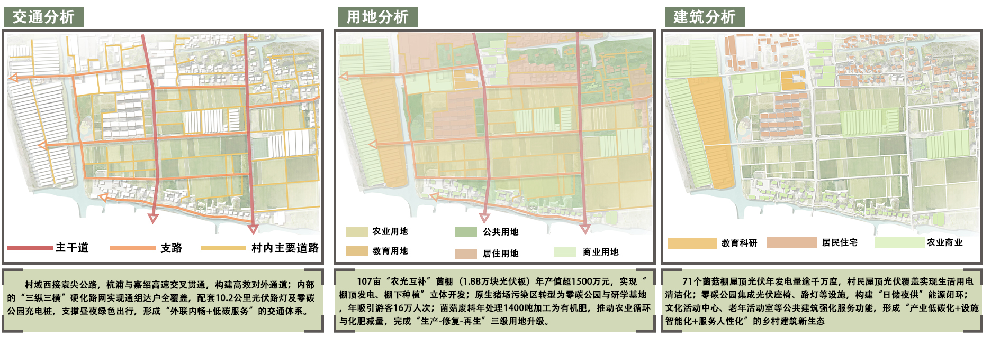
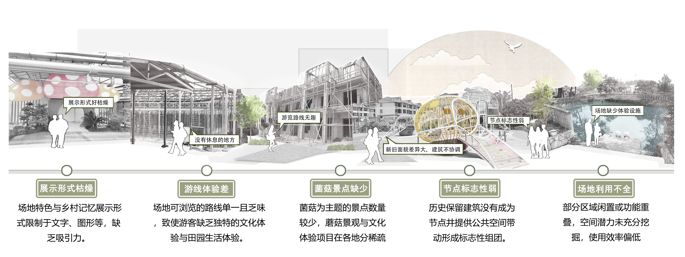
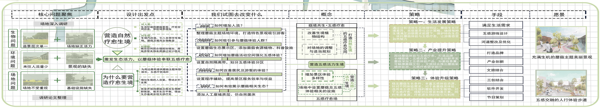
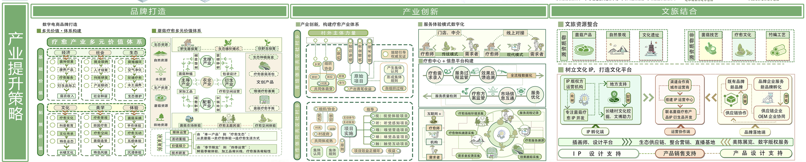
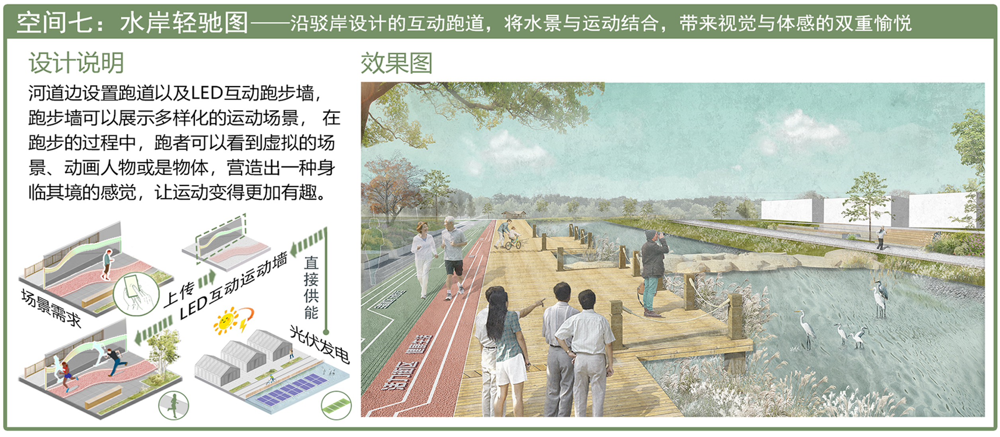
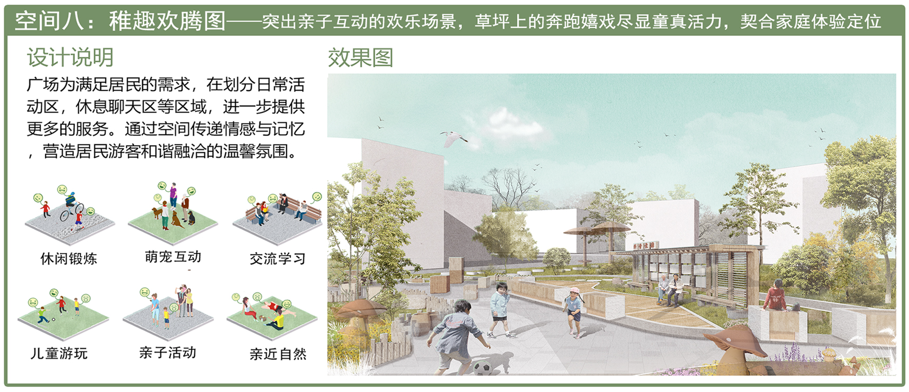
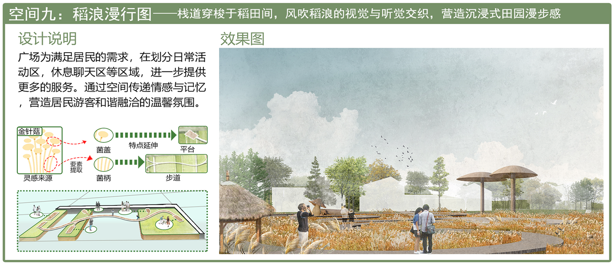

乡村景观改造提升规划设计
项目概述
菌菇是长啸村的魂
作为乡村特色产业，菌菇产业需借万物智联打破"分散化""同质化"，依托科技软件聚技术、客流，激活乡村活力。长啸村升级蓝图与菌菇产业整合及科技赋能绑定。
结合村产业根基与生态特质，以"愈联"为核心，融"五感愈联"与万物智联理念升级。融合菌菇资源感官场景与智慧技术，借软件建"菌菇监测 + 五感联动"平台，造 "菌香漫野引客来" 空间。
从感官营造、业态创新、五感体验提策略，融入智联技术：用传感器监测菌菇生长，游客可通过小程序查看；借 AR 让游客与虚拟菌菇互动。保留"菌味浓、野趣足、烟火暖" 底色，焕新长啸村。
项目信息
前期分析

场地现状综合分析
通过对项目区域的交通、用地和建筑情况进行深入调研，我们识别出乡村发展中存在的关键问题。交通网络不完善导致村民出行不便，土地利用效率低下限制了经济发展，传统建筑缺乏保护与更新使得文化特色逐渐消失。这些分析为后续的设计策略制定提供了科学依据。
核心问题识别

关键挑战与机遇
基于前期调研，我们总结出四大核心问题：产业结构单一、基础设施落后、生态环境退化、文化传承断层。针对这些问题，我们提出了系统性的解决方案，通过产业升级、设施改善、生态修复和文化活化四大策略，实现乡村的全面振兴。
设计框架与策略

"愈联"核心设计理念
基于对场地现状的深入分析，我们构建了以"愈联"为核心的总体设计框架，融合"五感愈联"与万物智联理念，实现长啸村的全面升级。
五感愈联
通过视觉、听觉、嗅觉、味觉、触觉五种感官体验，创造沉浸式乡村环境，让游客全方位感受菌菇文化的魅力。
万物智联
利用物联网、AR等智能技术，构建"菌菇监测+五感联动"平台，实现传统农业与现代科技的完美融合。
产业升级
打破菌菇产业"分散化""同质化"困局，通过科技软件聚技术、客流，激活乡村活力。
五感体验设计
视觉体验
打造"菌香漫野"景观，通过AR技术与虚拟菌菇互动，创造独特的视觉盛宴。
听觉体验
结合自然环境音效与菌菇生长声音，创造独特的乡村声景，增强沉浸感。
嗅觉体验
保留"菌味浓"的特色，通过种植芳香植物，营造层次丰富的嗅觉体验。
味觉体验
开发菌菇特色美食，让游客品尝到最新鲜的菌菇料理，体验"烟火暖"的乡村生活。
触觉体验
设计互动装置，让游客亲手触摸不同生长阶段的菌菇，感受自然的生命力。
产业提升策略

产业升级路径
针对当地产业结构单一的问题，我们提出了"传统农业升级+新兴产业引入"的双轮驱动策略。通过发展特色农业、乡村旅游和文创产业，形成多元化的产业体系，提高村民收入水平，增强乡村经济活力。
空间改造方案
空间重塑与活化
基于产业布局和功能需求，我们对乡村空间进行了重新规划和设计。通过优化道路系统、完善公共设施、改善居住环境，打造宜居宜业的乡村空间。同时，注重保留乡村特色风貌，避免"千村一面"的同质化问题。


